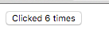
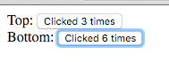
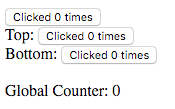

Custom Matchers
You are already familiar with pre-shipped Matchers which redux-elm provides:
matcherexactMatcherparameterizedMatcher
In most cases you should be satisfied with them, but sometimes you might have very specific use case which would be very difficult to implement using pre-shipped Matchers. Imagine you have a Counter Component which counts how many clicks a button was clicked and displays it on the screen:

Implementation is fairly simple:
Counter Updater
import { Updater, Matchers } from 'redux-elm';
export default new Updater(0, Matchers.exactMatcher)
.case('Increment', function*(model) {
return model + 1;
})
.toReducer();
Counter View
import React from 'react';
export default ({ model, dispatch }) => (
<button onClick={() => dispatch({ type: 'Increment' })}>Clicked {model} times</button>
);
Now let's imagine we want to implement a Pair of Counters, we'll utilize what we know about Composition and build CountersPair:
CountersPair Updater
import { Updater, Matchers, mapEffects } from 'redux-elm';
import counterUpdater from '../counter/updater';
function* init() {
return {
top: yield* mapEffects(counterUpdater(), 'Top'),
bottom: yield* mapEffects(counterUpdater(), 'Bottom')
};
}
export default new Updater(init)
.case('Top', function*(model, action) {
return {
...model,
top: yield* mapEffects(counterUpdater(model.top, action), 'Top')
};
})
.case('Bottom', function*(model, action) {
return {
...model,
bottom: yield* mapEffects(counterUpdater(model.bottom, action), 'Bottom')
};
})
.toReducer();
CountersPair View
import React from 'react';
import { forwardTo } from 'redux-elm';
import Counter from '../counter/view';
export default ({ model, dispatch }) => (
<div>
Top: <Counter model={model.top} dispatch={forwardTo(dispatch, 'Top')} />
<br />
Bottom: <Counter model={model.bottom} dispatch={forwardTo(dispatch, 'Bottom')} />
</div>
);

Real use case
So now we have Counter and CountersPair implemented as independent Components and we would like to use them in some "meaningful" application. So the app will display Counter and CountersPair and it will sum all the clicks on any button. Meaning that either clicking on Counter or any Counter inside CountersPair Component will increment global counter.

Real use case Updater
import { Updater, Matchers, mapEffects } from 'redux-elm';
import counterUpdater from '../counter/updater';
import countersPairUpdater from '../counters-pair/updater';
function* init() {
return {
counter: yield* mapEffects(counterUpdater(), 'Counter'),
countersPair: yield* mapEffects(countersPairUpdater(), 'CountersPair'),
globalCounter: 0
};
}
export default new Updater(init)
.case('Counter', function*(model, action) {
return {
...model,
counter: yield* mapEffects(counterUpdater(model.counter, action), 'Counter')
};
})
.case('CountersPair', function*(model, action) {
return {
...model,
countersPair: yield* mapEffects(countersPairUpdater(model.countersPair, action), 'CountersPair')
};
})
.toReducer();
Real use case View
import React from 'react';
import { forwardTo } from 'redux-elm';
import Counter from '../counter/view';
import CountersPair from '../counters-pair/view';
export default ({ model, dispatch }) => (
<div>
<Counter model={model.counter} dispatch={forwardTo(dispatch, 'Counter')} />
<CountersPair model={model.countersPair} dispatch={forwardTo(dispatch, 'CountersPair')} />
<br />
Global Counter: {model.globalCounter}
</div>
);
When you try the application, clicking on any Counter properly increment its value but global counter remains unchanged and that's because we didn't defined globalCounter field mutation. Now comes the right time for introducing Custom Matcher implementation because we would like in our Root Component be able to handle all the Increment actions in the entire application no matter what the nesting of component is. We know that we want to handle any action of which type ends with Increment String.